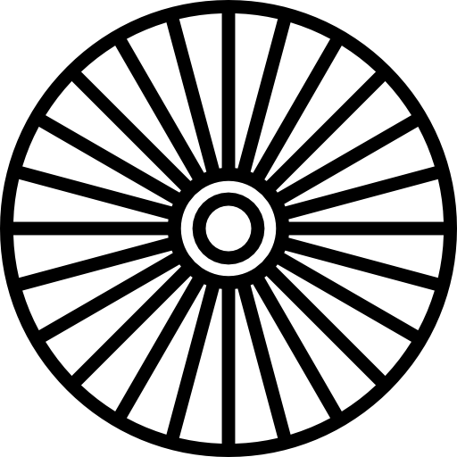

THE BIKE THE MOUNTAINS TOUR RISES from the town of Littleton, Colorado and explores the Colorado Front Range. Our tour crosses the Continental Divide twice, giving you the opportunity to bike the highest paved roads in the United States. This tour is a classic showcase of Colorado's Rocky Mountain scenery.
Not designed for the weekend cyclist,
this tour is offered only for those fit
enough to ride high mountain passes.
We provide sag wagons and support.
Your lodging and meals are also part
of the registration fee. We guarantee
tough climbs, amazing sights, sweaty
jerseys, and lots of fun.
"The Bike the Mountains Tour is amazing. I highly recommend it and would gladly return."
— Steve H.
This is the seventh year we've offered the Bike the Mountains Tour. It is our most popular tour and riders are returning again and again. Our experienced tour leaders will be there to guide, help, encourage, draft, and lead you every stroke of the way. Come join us!
We start from the foothills above Littleton, Colorado, promptly at 9am. The first day is a chance to get your legs in shape, test your gearing, and prepare for what's to come.
Day 2 starts with a climb up Bear Creek Canyon to Lookout Mountain, followed by a swift descent into Golden. Refresh yourself at the famous Coors Brewery.
Day 3 takes you along the Peak to Peak Highway. This route showcases the mountains of the Front Range and provides amazing vistas.
Day 4 brings high-altitude cycling through Rocky Mountain National Park and up Trail Ridge Road.
From Grand Lake, you'll bike to Winter Park and then over Berthoud Pass.
We ride back to Littleton over Squaw Pass and Bear Creek, then enjoy a celebratory dinner.